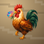
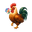
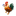
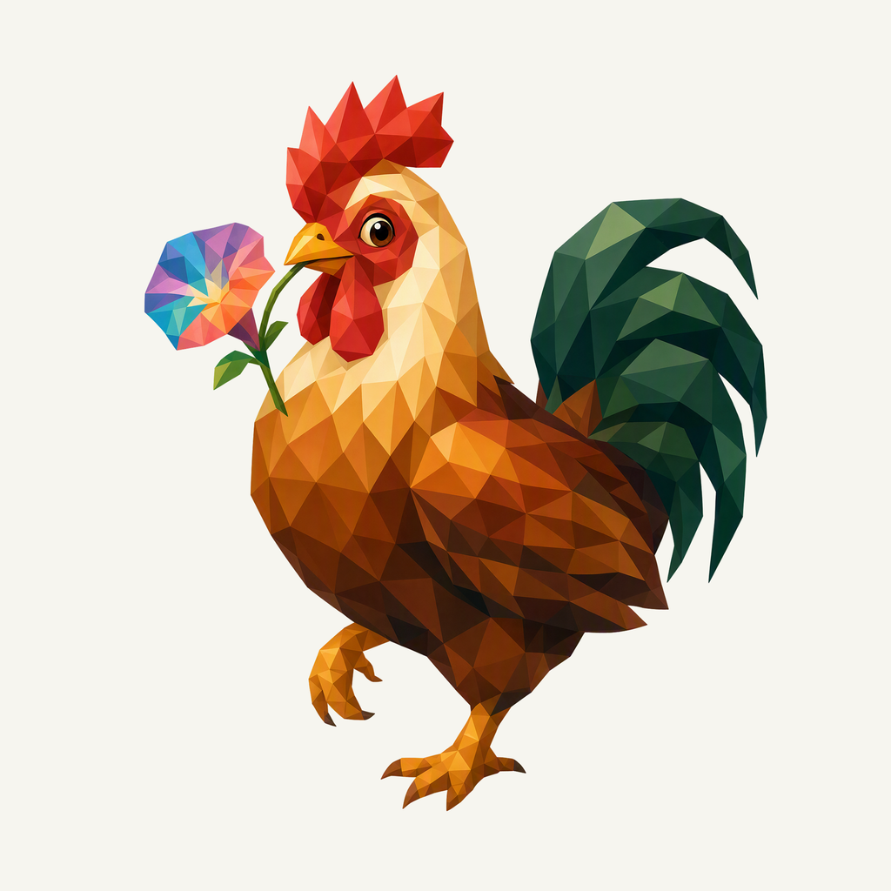
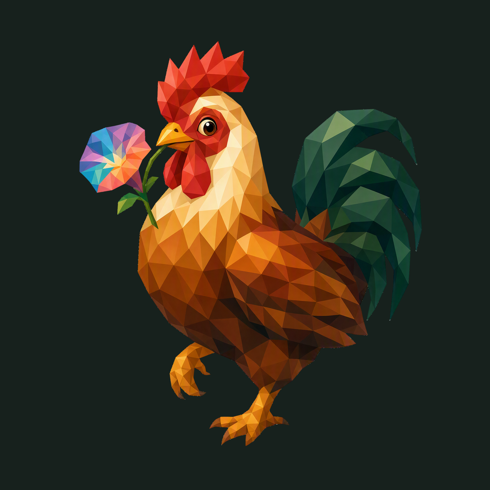

01 / Composition
The first morning step
A rooster pauses halfway through a step and turns toward a morning-glory flower. Its comb, full tail and toes form one complete, compact animal.
Animal family · Refined identity
One morning step, one small flower. The first dedicated Rooster identity.
Adopted redesign · finishing 02
Native 2048 × 2048
01 / Composition
A rooster pauses halfway through a step and turns toward a morning-glory flower. Its comb, full tail and toes form one complete, compact animal.
02 / Drawing
Copper and ochre planes lead, with a natural red comb and deep green tail. One faceted flower carries the small multicolored interest point.
03 / Presentation
Low stepped paper terraces cross a warm ochre field. Their different heights give a quiet sunrise rhythm without creating a literal landscape.
Presentation tiles at 128/64 px; transparent artwork for small app and browser marks.



The complete animal and accessory have at least 172.5 px clearance from the actual rounded outline. Ten export sizes preserve one uniform placement. Small app/browser marks use the transparent foreground; fine facets and accessory details simplify at 16 px.
A designed background, with colors sampled from the exact native artwork.
Select a swatch to copy its hex value. Artwork colors and platform system colors are documented separately.
One transparent foreground, checked on two contrasting backgrounds.


Azure Foundry · gpt-image-2 · one request · native 2048 × 2048
Loading study text…
The previous identity is historical context; the current brief defines the selected animal, gesture and palette. Frogie guides connected flat facets; these owner-provided boards guide the independent background, offset framing, and matte surface.


{kind=link}
{kind=link}
{kind=link}
{kind=link}
{kind=link}